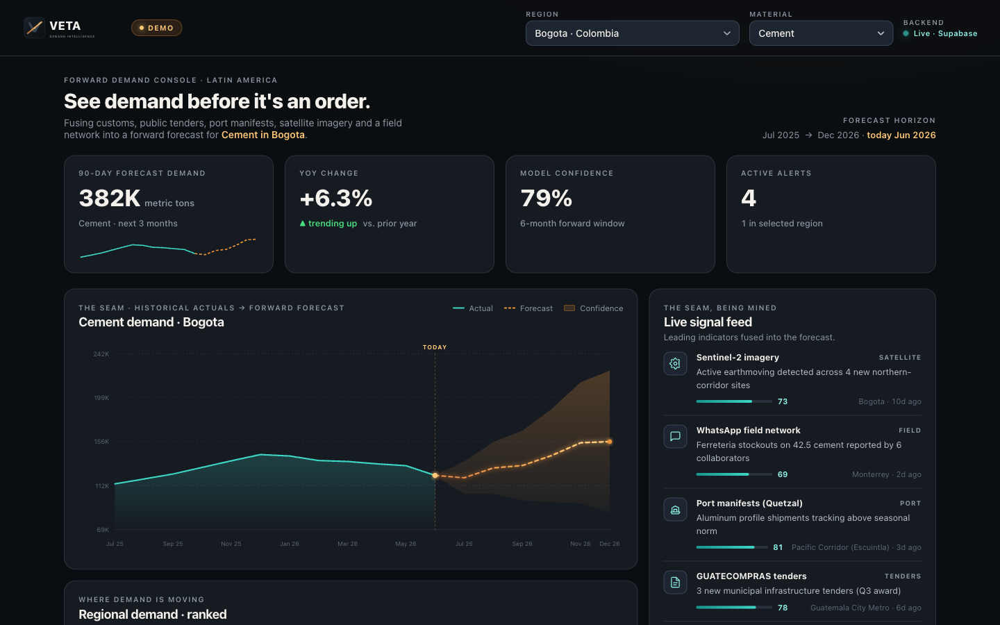

The demand-intelligence layer for Latin American construction — fusing customs, public tenders, port manifests, satellite, and a field network into one forward forecast.
Five data sources stress-tested for feasibility, a two-method bottom-up market model, and a verified buyer target list with warm paths in.
data sources stress-tested for machine-ingestion & cost
Central American countries modeled bottom-up
independent methods cross-checking the TAM
licensing cost — anchor sources are free & open
Everyone who sells, finances, or moves materials runs on a backward-looking, fragmented view of demand. The one product that fixes this — Dodge — exists only in the United States.
the reliability score the leading syndicated source gives its own LatAm project data
Dodge maps forward demand county-by-county — and stops at the border. South of it: the void.
GlobalData country PDF — ~$2K, covers only Panama in CA
FICEM / SNIC / CMIC / DANE — backward-looking
Argus / CRU — give price, not volume
so unreliable the vendor rates it ~0
Manufacturers misallocate capacity. Distributors carry the wrong stock. Lenders underwrite blind.
Every quarter she has to call forward demand — how much cement each region will consume — so plants run at the right rate and inventory sits in the right place.
Director of Demand Planning · regional CA cement manufacturer
"I commit to a number the plant follows for the quarter — built from last year's volumes, a PDF that ignores my region, and a few sales-rep calls."
"Who's building what — go win the spec."
Tells you who.
"How much a region will consume — so I can pre-position capacity and inventory."
Tells you how much.
Leads tell you who. Veta tells you how much. Different product, different decision, different budget.
| Player | Forward? | Sub-country? | LatAm? | Demand volume (not price/leads) |
|---|---|---|---|---|
| CemWeek — cement forecasts | ||||
| Argus / CRU — commodity prices | ||||
| GlobalData / Mordor — reports | ||||
| FICEM / SNIC — free stats | ||||
| LogComex — customs aggregator | ||||
| Building Radar / BNC — leads | ||||
| Dodge — the gold standard | ||||
| Veta |
We don't sell you a list of projects. We tell you how much the market will buy, by material and by region — before the order is placed.
See demand before it's an order.

Material × region × quarter — how much each market will consume next.
The accuracy / error band comes from the Guatemala one-country backtest (Build Test #2). We present the methodology — and prove the number — not slideware.
Win share by pre-positioning ahead of competitors. Carry a defensible S&OP number.
Region by region. One contract behind a network covers thousands of stores.
Pre-position and lend against signal instead of lagging stats.
Sharper channel intelligence and a stronger ecosystem position — out of the same data, without being the customer the venture depends on.
Brazil's customs API, CA tender OCDS portals, and free Sentinel-2 became machine-ingestible at scale only in the last few years. This didn't exist in usable form five years ago.
Fusing messy sources into a forecast is now low-cost — satellite change-detection runs ~79% mIoU off open models.
Building Radar closing Holcim and Heidelberg in 2024–25 proves the world's biggest makers now buy construction intelligence. LatAm is the white space.
We're honest: the near-term wedge is a focused, winnable ~$1.6M SOM. But the same data asset compounds — across geographies, buyers, and products — into the intelligence layer for the building-materials economy.
Geography: LatAm → all emerging markets (open data exists everywhere). Buyers: manufacturers → distributors → traders → lenders/insurers → governments → logistics — one signal, many buyers. Products: forecast → price indices → project intel → credit-risk → procurement → ESG. Category: the Argus / Wood Mackenzie-style data layer for the sector.
Bottom-up at each step (market-sizing.md §6). Comps: S&P Commodity Insights $2.14B · Wood Mackenzie sold $3.1B · Argus ~$1.4B · Procore $1.32B. The $500M+ is the market the wedge opens onto — not near-term revenue.
Annual subscription tiers. Crowdsource layer: pay contributors $0.05–0.10 / data point against subscriptions in the low thousands/mo (Premise model).
Gross-margin %, CAC, and payback are not yet modeled — the shape is right, the numbers come next.
A defensible forecast moves three line items at once — and Veta captures a small fraction of the value it creates.
return on a full deployment
value captured (well under 30%)
Holcim and Heidelberg Materials — the two largest building-materials makers in the world — pay Building Radar for construction intelligence.
Verifiable from Holcim's own LinkedIn, tied to its NextGen Growth 2030 strategy (~Aug 2025). BNC sells the same category at $360 / $480 / $720 per user/yr + $2,499/yr analytics.
The behavior — manufacturers paying for construction intelligence — is established everywhere except the region with the biggest white space.
That proven willingness-to-pay is for project leads. We sell the forecast. Same buyers, adjacent product — and our specific layer is untested. It's the first thing we prove: a paid LOI from a non-AG manufacturer for the forecast. The pivot is pre-baked — if they'll only pay for leads, Veta pivots to lead-intel (already validated) or index-licensing to FIs.
An arms-length, contractable feed of AG's distribution / ferretería order data — what LogComex, Building Radar, and Dodge structurally cannot get.
CACIF + FICEM / cement-association access opens Central American doors a cold startup can't reach.
A named CA reference — a head-start only. We don't lean the moat on it.
External manufacturers are the customers; AG benefits indirectly. The moat holds only if AG grants that arms-length feed to an independent company — that's part of the ask, and we test it this sprint (~$0). Fallback moat if AG balks: the WhatsApp field network + the fusion/accuracy edge.
The $500K initial capitalization buys the right to raise the Seed. Seed ARR band: floor $250K · midpoint $320K · stretch $500K+.
Effective ARR, base scenario — path-to-seed.md.
An IC / Board decision — not a market raise. Structured as a Post-Money SAFE converting to Preferred at the later Seed (shown as-converted, 35% FDE).
InnovArise 35% · Founders + ESOP 65% (CEO 35 / CTO 20 / ESOP 10).
The $500K funds ~12 months to a Seed of ~$1M @ ~$5M post. Dilution path (studio %FDE): 35.0 → 27.2 (Seed) → 21.8 (A) → 17.4 (B) → 15.2 (C). Clears the 5x bar at Series A (~6.5x); base case ~2–2.5x.
Engineering-weighted — the moat is the data pipeline. $500K is tight for the full build; an IC check-sizing consideration.
Five signals fused into one forecast — the cheap wedge into the $500M+ data layer for the emerging-markets building-materials economy. A moat only Grupo AG can supply. A category the world's largest makers already pay for. We know the one thing we have to prove — and we've aimed the whole next sprint at exactly that.